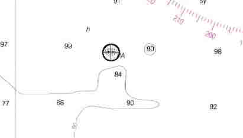

Link Index
MWDC
Home Page
Shipwrecks Page
Albert Galatin
Alice M. Colburn
Alice M. Lawrence
Ardandhu
Barge and Crane
California
Charles S. Haight
Chelsea
Chester Poling
City of Salisbury
Corvan
Dixie Sword
Edward Rich
French Van Gilder
Henry Endicott
Herman Winter
Hilda Garston
HMCS St. Francis
James Longstreet
John Dwight
Kershaw
Kiowa
Lackawanna
Lunet
Mars
Pemberton
Pendleton
Pinthis
Port Hunter
Pottstown
Romance
Seaconnet
Trojan
USS Grouse
USS New Hampshire
USS Triana
USS Yankee
USS YSD
Vineyard Sound
Lightship
|
Description: Lighter; Wood
Dimensions: length - 128.4 ft. width - 30.9 ft. depth - 10.1 ft.
Tonnage: gross - 349 other -
Propulsion: Steam, single propeller
Machinery: 2, single crank steam engines; 2, Scotch type, firetube boilers; Steam Winch
Cargo:
The Shipwreck
Date Sunk: August 5, 1924
Cause: Collision
Location: Off Nahant
Coordinates: Latitude, 42o - 25" - 05"N Longitude,70o - 51" - 25"W
Loran: 13961.2 and 44297.1.
A thick fog had settled over the waters of Broad Sound as the steam lighter Herbert made her way to Ipswich, from her homeport of Boston. Unknown to Herbert's Captain the passenger steamer City of Gloucester was on a collision course.
While still about 3 miles east of Nahant the south bound passenger steamer shot out of the fog ahead of Herbert and plowed into the smaller steamers port bow, about 20 feet aft of the stem. Seeing their vessel was doomed, Herbert's crew abandoned ship and were picked up by the City of Gloucester. Mortally wounded, Herbert sank in fifteen minutes. Miraculously there was no loss of life.
Both Captains were found to be at fault, their licenses were suspended for 15 days and they and the owners of their vessels were fined.
Back to Top
Dive Site Conditions
Depth in feet: maximum - 97 minimum - 90
Visibility in feet: average -
The vessel's bow is unrecognizable, just scattered debris on a sandy bottom. Swimming aft, the first identifyable structure found is the vessel's steam operated winch. Herbert had a clam shell excavator, which can be found about 20 feet off the starboard side of the wreck, near amidships. The winch is heavily corroded and encrusted with marine life. Continueing aft, little but an outline remains of the vessels staunch wooden hull. Her two massive boilers stand upright at the stern.
When I dove this wreck, in 1997, I got the impression the boilers were oil fired, due to the relatively small stoke holes. However these holes may have been access hatches to ash pits, the actual stoke hatches may have been corroded shut. It was a tight squeeze between the boilers but well worth it. On the other side I found myself surrounded by machinery from the age of steam. Two, tall single cylinder steam engines stand side by side, partially shrouded by fishing nets. What information I've dug up so far has led me to believe Herbert was a single propeller vessel. The shafts of these two engines lead into a large unidentified piece of machinery, which might comprise some form of reduction gear to a single propeller. Herbert's stern is a confused mass of wreckage, there was no sign of shafts or propellers.
Click on the image to go to the MapTech Map Server,
for additional navigation information.

Back to Top
Historical Background
Constructed: year - 1910; where - Noank, Connecticut
builder - Robert Palmer & Son
Construction details:
Crew: 12 ; Master:
Owners: Boston Sand and Gravel Company
Home or Hailing Port:
Former Name(s) and date(s):
Official number: 207913 Country: U.S.A.
Other Comments:
Back to Top
Salvage
Back to Top
Sources:
Fishable Wrecks and Rockpiles; Coleman & Soares, 1989
MapTech Mapserver
Merchant Vessels of the United States; 1924
Merchant Vessels of the United States, Vessels Lost Chapter; 1925
The Fishermen Magazine; February, 1989
Back to Top
These files are under construction. Any information, specifically dive site related, would be greatfully appreciated.
Send comments to: Chris Hugo
Copyright © 2000 by Christopher C. Hugo
Massachusetts Board of Underwater Archaeological Resources
All Rights Reserved
|